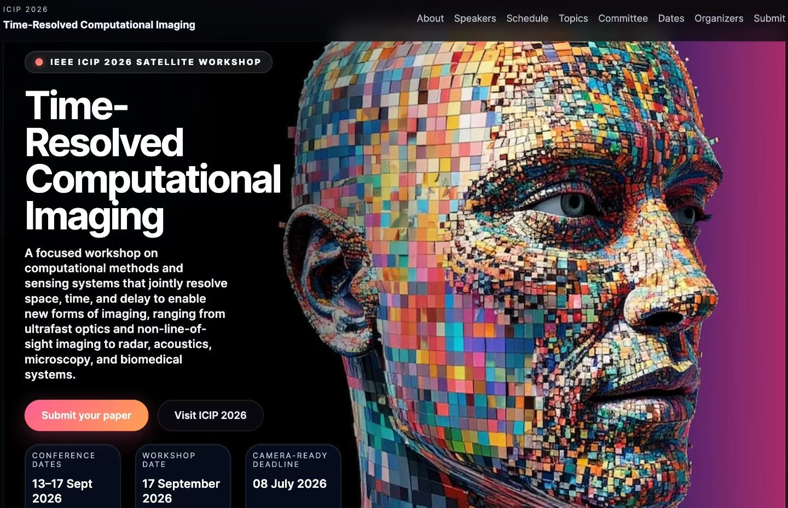
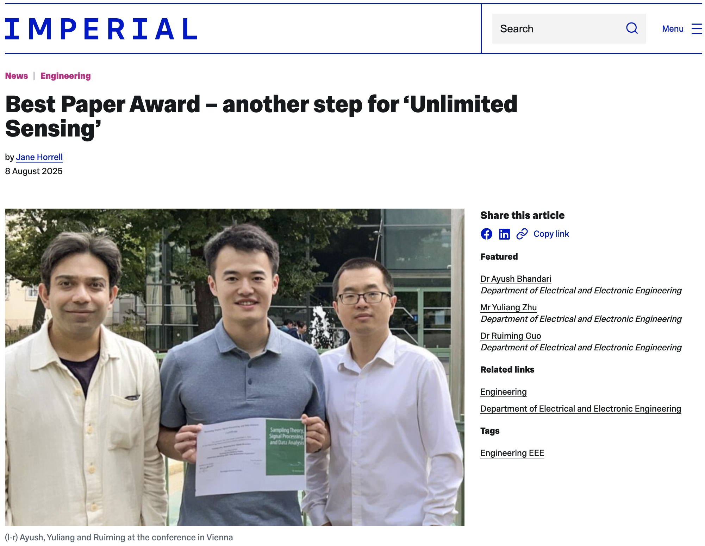

News2026Nov. Our Work on Digital Audio from Quantization Noise is published to IEEE Transactions on Audio, Speech, and Language Processing. Sep. Delivers a Keynote at ICIP 2026 Workshop on Time-Resolved Computational Imaging.  2025Jul. Our paper won the Best Paper Award at SampTA 2025.  2023Feb. Received the CUHK Postgraduate Student Research Excellence Award. [Link] |